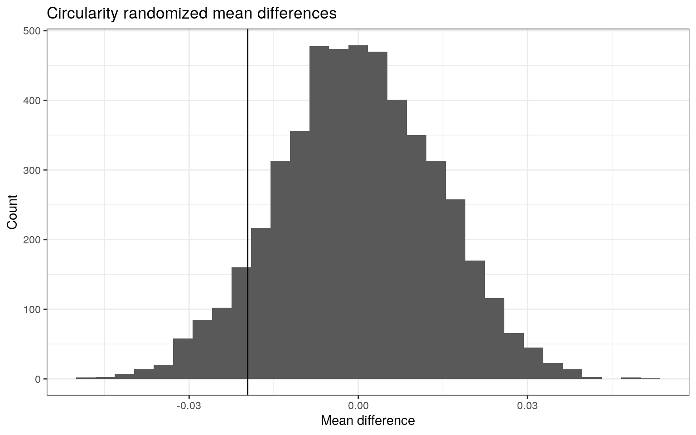
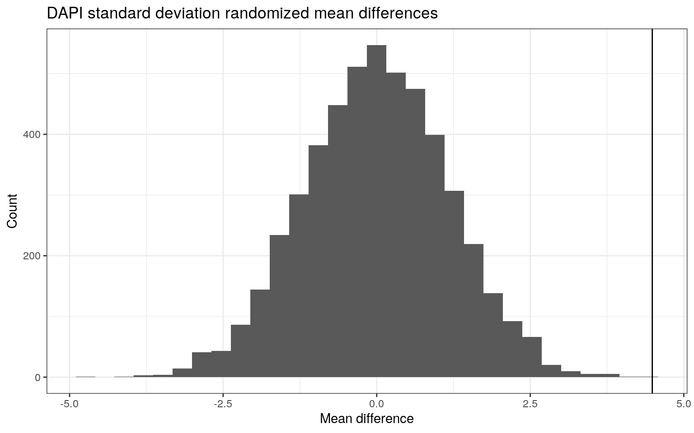
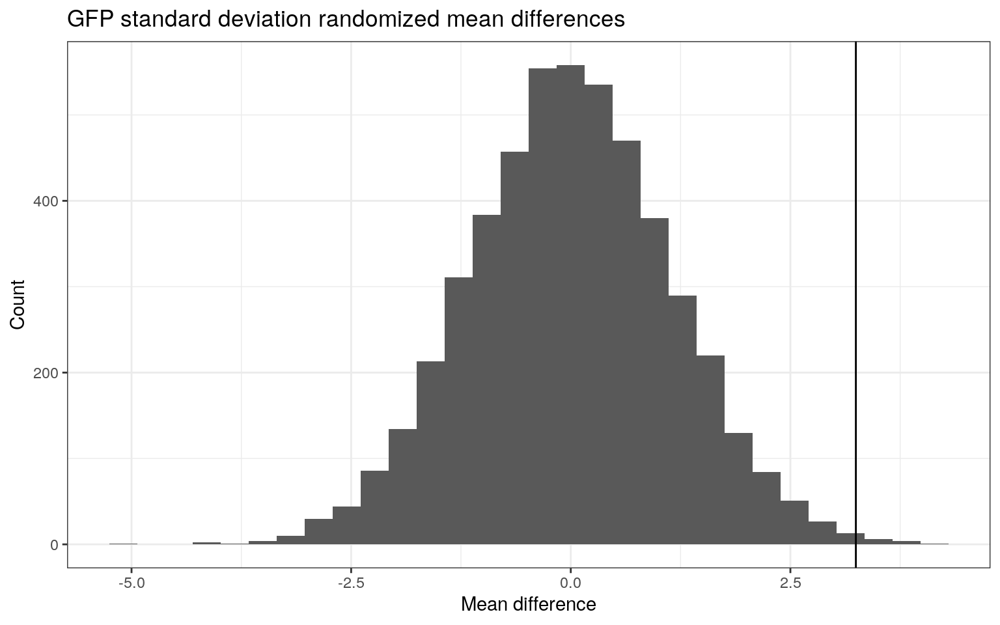

January 1, 0001
Modeling
library(tidyverse)
library(lmtest)
library(kableExtra)
library(plotROC)
library(glmnet)
library(sandwich)Data import and descriptions
The dataset I am working with is an imaging dataset that I generated myself. I imaged nuclei in the model organism C. elegans of two genotypes: rDNA deletion heterozygotes (rDNA\(\Delta\)/+) and homozygotes (rDNA\(\Delta\)/\(\Delta\)). The purpose of the experiment is to determine the effect of deletion of rDNA upon organization of chromatin and the nucleolus to test my overall hypothesis that the rDNA locus contributes to the overall architecture of the genome and the nucleolus. Images were acquired by fluorescent confocal microscopy of z-stacks in three channels for three different markers: DAPI stains DNA, DAO-5::GFP localizes to the nucleolus, and mCherry::H2B is present in rDNA\(\Delta\)/+ but not rDNA\(\Delta\)/\(\Delta\).
The data was acquired by an algorithm that identified nuclei from the background based on DAPI staining. Once the nuclei were identified, shape and intensity values for each nucleus and each channel were computed. The dataset contains \(506\) observations of \(28\) variables. Each observation contains data for a single focal plane of a single nucleus. The first two variables contain information about the worm’s genotpype (rDNA\(\Delta\) homozygous or heterozygous) and the focal plane’s relative position within the stack (low, medium, or high). The next eight variables contain information about the shape of the nucleus and contain the prefix shape.. These include: Area, Major and Minor axis length, Angle, Circularity, Aspect Ratio, Roundness, and Solidity. The final six variables describe six intensity measurements for each of the three channels (DAPI, GFP, mCherry) including: Mean, Standard Deviation, Minimum, Maximum, Integrated Density, and Median.
data <- read_csv('~/personal/projects/project2/imaging_data.csv')
data <-
data %>%
select(-X1, -worm, -Slice, -starts_with('RawIntDen'))
data %>%
head(n = 5) %>%
kbl(caption = 'Data') %>%
kable_styling(bootstrap_options = c("striped", "hover", "condensed")) %>%
scroll_box(width = '100%', height = '100%')| rDNAdel | position | shape.Area | shape.Major | shape.Minor | shape.Angle | shape.Circ. | shape.AR | shape.Round | shape.Solidity | Mean.DAPI | Mean.GFP | Mean.mCherry | StdDev.DAPI | StdDev.GFP | StdDev.mCherry | Min.DAPI | Min.GFP | Min.mCherry | Max.DAPI | Max.GFP | Max.mCherry | IntDen.DAPI | IntDen.GFP | IntDen.mCherry | Median.DAPI | Median.GFP | Median.mCherry |
|---|---|---|---|---|---|---|---|---|---|---|---|---|---|---|---|---|---|---|---|---|---|---|---|---|---|---|---|
| heterozygous | low | 3.718 | 2.409 | 1.965 | 172.125 | 0.117 | 1.226 | 0.816 | 0.615 | 98.984 | 8.806 | 9.579 | 16.867 | 8.350 | 19.521 | 61 | 3 | 3 | 168 | 58 | 133 | 368.007 | 32.740 | 35.614 | 96 | 6 | 3 |
| heterozygous | low | 7.472 | 3.473 | 2.739 | 30.921 | 0.328 | 1.268 | 0.789 | 0.824 | 121.828 | 15.559 | 15.735 | 31.377 | 13.749 | 27.423 | 69 | 3 | 3 | 229 | 90 | 176 | 910.301 | 116.257 | 117.574 | 116 | 11 | 3 |
| heterozygous | low | 9.742 | 3.735 | 3.321 | 16.457 | 0.568 | 1.125 | 0.889 | 0.915 | 149.025 | 12.556 | 20.645 | 36.389 | 13.116 | 33.402 | 67 | 3 | 3 | 250 | 129 | 255 | 1451.802 | 122.325 | 201.119 | 150 | 8 | 3 |
| heterozygous | low | 11.401 | 4.424 | 3.281 | 10.964 | 0.428 | 1.348 | 0.742 | 0.871 | 159.772 | 23.522 | 118.094 | 43.501 | 23.952 | 72.968 | 72 | 3 | 2 | 255 | 186 | 255 | 1821.541 | 268.171 | 1346.371 | 159 | 15 | 114 |
| heterozygous | low | 6.352 | 3.356 | 2.410 | 20.659 | 0.461 | 1.393 | 0.718 | 0.869 | 139.333 | 22.159 | 17.346 | 35.291 | 19.087 | 29.640 | 77 | 3 | 3 | 237 | 140 | 181 | 884.989 | 140.746 | 110.174 | 134 | 18 | 3 |
Hypothesis testing
MANOVA, ANOVAs, and t tests
A MANOVA was performed for a subset of shape variables (Area, Circularity, Aspect Ratio) and a subset of intensity variables for DAPI and GFP (Mean, Standard Deviation, Integrated Density, and Median) to see if there is a mean difference between homozygous and heterozygous worms. The mean difference between homozygous and heterozygous is significant for at least one of these variables (\(DF = 1\), \(F = 6.207\), \(p = 1.32 * 10^{-9}\)). Univariate ANOVAs were performed to identify the variables for which these groups differed. Significant differences were found for Area, Mean DAPI, Standard Deviation DAPI, Standard Deviation GFP, Integrated Density DAPI, Integrated Density GFP, and Median DAPI. Pairwise t-tests were carried out for these seven variables. A total of \(19\) tests were performed, which gives a Type I error rate of \(0.999998\). Using a Bonferroni-correction, \(\alpha = 0.05/19 = 0.00263\), the two genotypes are only different for Mean DAPI (\(p = 1.8*10^{-7}\)), Standard Deviation DAPI (\(p = 0.00013\)), Integrated Density DAPI (\(p = 0.00023\)), and Median DAPI (\(p = 4.2*10^{-8}\)).
The MANOVA test makes many assumptions. One assumption is that there are linear relationships among DVS, but this is likely not the case for my data. For example, there is likely no linear relationship between Circularity and Area. Another assumption is that there is no extreme outliers for multivariate or univariate data, but I did not do any stringent cleaning or analysis of the data, so it is likely that some outliers are present since the values were computed by an automated algorithm.
# MANOVA
man1 <- manova(cbind(shape.Area, shape.Circ., shape.AR, Mean.DAPI, Mean.GFP, StdDev.DAPI, StdDev.GFP, IntDen.DAPI, IntDen.GFP, Median.DAPI, Median.GFP) ~ rDNAdel, data = data)
summary(man1)## Df Pillai approx F num Df den Df Pr(>F)
## rDNAdel 1 0.12144 6.2074 11 494 1.32e-09 ***
## Residuals 504
## ---
## Signif. codes: 0 '***' 0.001 '**' 0.01 '*' 0.05 '.' 0.1
' ' 1# univariate ANOVAs
summary.aov(man1)## Response shape.Area :
## Df Sum Sq Mean Sq F value Pr(>F)
## rDNAdel 1 148 148.025 5.6972 0.01736 *
## Residuals 504 13095 25.982
## ---
## Signif. codes: 0 '***' 0.001 '**' 0.01 '*' 0.05 '.' 0.1
' ' 1
##
## Response shape.Circ. :
## Df Sum Sq Mean Sq F value Pr(>F)
## rDNAdel 1 0.0422 0.042226 2.0044 0.1575
## Residuals 504 10.6177 0.021067
##
## Response shape.AR :
## Df Sum Sq Mean Sq F value Pr(>F)
## rDNAdel 1 0.909 0.90942 1.6806 0.1954
## Residuals 504 272.723 0.54112
##
## Response Mean.DAPI :
## Df Sum Sq Mean Sq F value Pr(>F)
## rDNAdel 1 54165 54165 28.042 1.776e-07 ***
## Residuals 504 973497 1932
## ---
## Signif. codes: 0 '***' 0.001 '**' 0.01 '*' 0.05 '.' 0.1
' ' 1
##
## Response Mean.GFP :
## Df Sum Sq Mean Sq F value Pr(>F)
## rDNAdel 1 466 466.17 1.3951 0.2381
## Residuals 504 168412 334.15
##
## Response StdDev.DAPI :
## Df Sum Sq Mean Sq F value Pr(>F)
## rDNAdel 1 2210 2209.90 14.905 0.0001277 ***
## Residuals 504 74723 148.26
## ---
## Signif. codes: 0 '***' 0.001 '**' 0.01 '*' 0.05 '.' 0.1
' ' 1
##
## Response StdDev.GFP :
## Df Sum Sq Mean Sq F value Pr(>F)
## rDNAdel 1 1156 1156.16 7.9093 0.00511 **
## Residuals 504 73674 146.18
## ---
## Signif. codes: 0 '***' 0.001 '**' 0.01 '*' 0.05 '.' 0.1
' ' 1
##
## Response IntDen.DAPI :
## Df Sum Sq Mean Sq F value Pr(>F)
## rDNAdel 1 13493425 13493425 13.775 0.000229 ***
## Residuals 504 493707407 979578
## ---
## Signif. codes: 0 '***' 0.001 '**' 0.01 '*' 0.05 '.' 0.1
' ' 1
##
## Response IntDen.GFP :
## Df Sum Sq Mean Sq F value Pr(>F)
## rDNAdel 1 319981 319981 5.3442 0.02119 *
## Residuals 504 30176447 59874
## ---
## Signif. codes: 0 '***' 0.001 '**' 0.01 '*' 0.05 '.' 0.1
' ' 1
##
## Response Median.DAPI :
## Df Sum Sq Mean Sq F value Pr(>F)
## rDNAdel 1 71281 71281 30.986 4.23e-08 ***
## Residuals 504 1159428 2300
## ---
## Signif. codes: 0 '***' 0.001 '**' 0.01 '*' 0.05 '.' 0.1
' ' 1
##
## Response Median.GFP :
## Df Sum Sq Mean Sq F value Pr(>F)
## rDNAdel 1 69 69.24 0.2539 0.6145
## Residuals 504 137431 272.68# post-hoc t-tests
pairwise.t.test(data$shape.Area,
data$rDNAdel, p.adj = 'none')##
## Pairwise comparisons using t tests with pooled SD
##
## data: data$shape.Area and data$rDNAdel
##
## heterozygous
## homozygous 0.017
##
## P value adjustment method: nonepairwise.t.test(data$Mean.DAPI,
data$rDNAdel, p.adj = 'none')##
## Pairwise comparisons using t tests with pooled SD
##
## data: data$Mean.DAPI and data$rDNAdel
##
## heterozygous
## homozygous 1.8e-07
##
## P value adjustment method: nonepairwise.t.test(data$StdDev.DAPI,
data$rDNAdel, p.adj = 'none')##
## Pairwise comparisons using t tests with pooled SD
##
## data: data$StdDev.DAPI and data$rDNAdel
##
## heterozygous
## homozygous 0.00013
##
## P value adjustment method: nonepairwise.t.test(data$StdDev.GFP,
data$rDNAdel, p.adj = 'none')##
## Pairwise comparisons using t tests with pooled SD
##
## data: data$StdDev.GFP and data$rDNAdel
##
## heterozygous
## homozygous 0.0051
##
## P value adjustment method: nonepairwise.t.test(data$IntDen.DAPI,
data$rDNAdel, p.adj = 'none')##
## Pairwise comparisons using t tests with pooled SD
##
## data: data$IntDen.DAPI and data$rDNAdel
##
## heterozygous
## homozygous 0.00023
##
## P value adjustment method: nonepairwise.t.test(data$IntDen.GFP,
data$rDNAdel, p.adj = 'none')##
## Pairwise comparisons using t tests with pooled SD
##
## data: data$IntDen.GFP and data$rDNAdel
##
## heterozygous
## homozygous 0.021
##
## P value adjustment method: nonepairwise.t.test(data$Median.DAPI,
data$rDNAdel, p.adj = 'none')##
## Pairwise comparisons using t tests with pooled SD
##
## data: data$Median.DAPI and data$rDNAdel
##
## heterozygous
## homozygous 4.2e-08
##
## P value adjustment method: none# calculate Type I error rate
tI <- 1 - (1 - 0.5)^(1 + 11 + 7)
tI## [1] 0.9999981# calculate adjusted alpha
alpha_value <- 0.05 / (1 + 11 + 7)
alpha_value## [1] 0.002631579Randomization test
A randomization test calculating the mean difference for Circularity, Standard Deviation DAPI, and Standard Deviation GFP between homozygotes and heterozygotes was performed. The null hypothesis is that there is no difference between the mean of these three variables for heterozygotes and homozygotes. The alternative hypotheses are that for each of these variables, there is a difference between the means. For Circularity, \(91.74%\) of the random mean differences are greater than the true mean difference (\(-0.0196\)), so I cannot reject the null hypothesis for Circularity. For Standard Deviation DAPI, \(0%\) of the random mean differences are greater than the true mean difference (\(4.487\)), so I reject the null hypothesis that there is no mean difference between heterozygotes and homozygotes for Standard Deviation DAPI. For Standard Deviation GFP, \(0.2%\) of the random mean differences are greater than the true mean difference (\(3.245\)), so I reject the null hypothesis that there is no mean difference between heterozygotes and homozygotes for Standard Deviation GFP.
# perform randomization tests
## make data for randomization
data_rand <- data %>%
select(rDNAdel, shape.Circ., StdDev.DAPI, StdDev.GFP)
## compute actual mean differences
data_rand_mean_diff <- data_rand %>%
group_by(rDNAdel) %>%
summarize_all(mean) %>%
select(-rDNAdel) %>%
summarize_all(diff)
data_rand_mean_diff %>%
kbl(caption = 'Mean differences') %>%
kable_styling(bootstrap_options = c("striped", "hover", "condensed"))| shape.Circ. | StdDev.DAPI | StdDev.GFP |
|---|---|---|
| -0.0196128 | 4.486824 | 3.245352 |
## initialize vectors
diffs_shape.Circ. <- vector()
diffs_StdDev.DAPI <- vector()
diffs_StdDev.GFP <- vector()
## calculate 5000 mean differences
for (i in 1:5000){
rand <- data_rand %>%
mutate(rDNAdel = sample(data_rand$rDNAdel))
diffs_shape.Circ.[i] <- rand %>%
summarize(mean(shape.Circ.[rDNAdel == 'heterozygous']) - mean(shape.Circ.[rDNAdel == 'homozygous'])) %>%
pull()
diffs_StdDev.DAPI[i] <- rand %>%
summarize(mean(StdDev.DAPI[rDNAdel == 'heterozygous']) - mean(StdDev.DAPI[rDNAdel == 'homozygous'])) %>%
pull()
diffs_StdDev.GFP[i] <- rand %>%
summarize(mean(StdDev.GFP[rDNAdel == 'heterozygous']) - mean(StdDev.GFP[rDNAdel == 'homozygous'])) %>%
pull()
}
# compute values greater than test statistics
mean(diffs_shape.Circ. > pull(select(data_rand_mean_diff, shape.Circ.)))## [1] 0.9146mean(diffs_StdDev.DAPI > pull(select(data_rand_mean_diff, StdDev.DAPI)))## [1] 0mean(diffs_StdDev.GFP > pull(select(data_rand_mean_diff, StdDev.GFP)))## [1] 0.0028diffs <- data.frame(diffs_shape.Circ., diffs_StdDev.DAPI, diffs_StdDev.GFP) %>%
pivot_longer(starts_with('diffs'), names_to = 'descriptor', values_to = 'mean_diffs') %>%
separate(descriptor, into = c('diffs_', 'descriptor'), sep = '_') %>%
select(-diffs_)
# plot distributions
diffs %>%
filter(descriptor == 'shape.Circ.') %>%
ggplot() +
geom_histogram(aes(x = mean_diffs)) +
geom_vline(xintercept = pull(select(data_rand_mean_diff, shape.Circ.))) +
labs(title = 'Circularity randomized mean differences',
x = 'Mean difference', y = 'Count') +
theme_bw()
diffs %>%
filter(descriptor == 'StdDev.DAPI') %>%
ggplot() +
geom_histogram(aes(x = mean_diffs)) +
geom_vline(xintercept = pull(select(data_rand_mean_diff, StdDev.DAPI))) +
labs(title = 'DAPI standard deviation randomized mean differences',
x = 'Mean difference', y = 'Count') +
theme_bw()
diffs %>%
filter(descriptor == 'StdDev.GFP') %>%
ggplot() +
geom_histogram(aes(x = mean_diffs)) +
geom_vline(xintercept = pull(select(data_rand_mean_diff, StdDev.GFP))) +
labs(title = 'GFP standard deviation randomized mean differences',
x = 'Mean difference', y = 'Count') +
theme_bw()
Linear regression
Linear regression model
I built a linear regression model to predict Median GFP from mean-centered Median DAPI and Median mCherry, including the interaction. The predicted Median GFP for an average Median DAPI and average Median mCherry is \(0.304\). Controlling for Median mCherry, average Median GFP increases by \(0.0225\) for every unit increase in average Median DAPI. Controlling for Median DAPI, average Median GFP increases by \(0.0444\) for every unit increase in average Median mCherry. The slope for average Median DAPI on Median GFP is \(5.978*10^{-4}\) for each unit increase in average Median mCherry. The proportion of the variation in Median GFP explained by the model is equal to \(0.0205\). The linearity assumption may not be met as Residuals vs. Fitted values does not appear linear, although this may not be the case. The assumption of normality fails as the QQplot shows that residuals do not fall along the normal line. The assumption of homoskedasticity is met as the Breush-Pagan test does not reject the null hypothesis of homoskedasticity (\(p=0.848\)). Robust standard errors were computed for the model, but neither coefficient estimates nor significance were affected: Median mCherry and the interaction of Median DAPI and Median mCherry were still significant.
# create data frame for linear regression
data_lm <- data %>%
## select columns
select(Median.GFP, Median.DAPI, Median.mCherry) %>%
## mean-center
mutate(Median.DAPI = as.numeric(scale(Median.DAPI, scale = F)),
Median.mCherry = as.numeric(scale(Median.mCherry, scale = F)))
# build linear regression model
fit_lm1 <- lm(Median.GFP ~ Median.DAPI * Median.mCherry, data = data_lm)
summary(fit_lm1)##
## Call:
## lm(formula = Median.GFP ~ Median.DAPI * Median.mCherry,
data = data_lm)
##
## Residuals:
## Min 1Q Median 3Q Max
## -24.676 -11.757 -3.759 9.483 78.243
##
## Coefficients:
## Estimate Std. Error t value Pr(>|t|)
## (Intercept) 3.040e+01 7.649e-01 39.747 < 2e-16 ***
## Median.DAPI 2.246e-02 1.581e-02 1.421 0.15604
## Median.mCherry 4.438e-02 1.395e-02 3.182 0.00156 **
## Median.DAPI:Median.mCherry 5.978e-04 3.011e-04 1.985
0.04764 *
## ---
## Signif. codes: 0 '***' 0.001 '**' 0.01 '*' 0.05 '.' 0.1
' ' 1
##
## Residual standard error: 16.38 on 502 degrees of freedom
## Multiple R-squared: 0.02052, Adjusted R-squared: 0.01467
## F-statistic: 3.505 on 3 and 502 DF, p-value: 0.01533# plot regression
## set line colors
mycols<-c("#619CFF","#F8766D","#00BA38")
names(mycols)<-c("- 1 sd", "mean", "+ 1 sd")
mycols=as.factor(mycols)
## setup data for plotting
data_lm_plot <- data_lm
### set Median.DAPI to its mean
data_lm_plot <- data_lm_plot %>%
mutate(Median.DAPI = mean(data_lm$Median.DAPI))
### add mean column
data_lm_plot <- data_lm_plot %>%
mutate(mean = predict(fit_lm1, data_lm_plot))
### set Median.DAPI to its mean + 1 sd
data_lm_plot <- data_lm_plot %>%
mutate(Median.DAPI = mean(data_lm$Median.DAPI) + sd(data_lm$Median.DAPI))
### add mean + 1 sd column
data_lm_plot <- data_lm_plot %>%
mutate(plus.sd = predict(fit_lm1, data_lm_plot))
### set Median.DAPI to its mean - 1 sd
data_lm_plot <- data_lm_plot %>%
mutate(Median.DAPI = mean(data_lm$Median.DAPI) - sd(data_lm$Median.DAPI))
### add mean + 1 sd column
data_lm_plot <- data_lm_plot %>%
mutate(minus.sd = predict(fit_lm1, data_lm_plot))
## plot
data_lm %>%
ggplot(aes(x = Median.mCherry, y = Median.GFP)) +
geom_point() +
geom_line(data = data_lm_plot, aes(y = mean, color = 'mean')) +
geom_line(data = data_lm_plot, aes(y = plus.sd, color = '+ 1 sd')) +
geom_line(data = data_lm_plot, aes(y = minus.sd, color = '- 1 sd')) +
scale_color_manual(values = mycols) +
labs(color = 'Median.DAPI',
title = 'Regression interaction') +
theme_bw()
# check assumptions
## linearity
ggplot() +
geom_point(aes(fit_lm1$fitted.values, fit_lm1$residuals)) +
geom_hline(yintercept = 0) +
labs(title = 'Check linearity',
x = 'Fitted values', y = 'Residuals') +
theme_bw()
## normality
### distribution of residuals
ggplot() +
geom_histogram(aes(fit_lm1$residuals)) +
labs(title = 'Distribution of residuals',
x = 'Residuals', y = 'Count') +
theme_bw()
### qqplot of residuals
ggplot() +
geom_qq(aes(sample = fit_lm1$residuals)) +
geom_qq_line(aes(sample = fit_lm1$residuals)) +
labs(title = 'QQplot of residuals', subtitle = 'Normal distribution') +
theme_bw()
## homoskedasticity
bptest(fit_lm1)##
## studentized Breusch-Pagan test
##
## data: fit_lm1
## BP = 6.6256, df = 3, p-value = 0.08484# robust SEs
coeftest(fit_lm1, vcov = vcovHC(fit_lm1))##
## t test of coefficients:
##
## Estimate Std. Error t value Pr(>|t|)
## (Intercept) 3.0402e+01 7.8112e-01 38.9208 < 2.2e-16 ***
## Median.DAPI 2.2462e-02 1.4827e-02 1.5149 0.1304233
## Median.mCherry 4.4377e-02 1.3237e-02 3.3524 0.0008615
***
## Median.DAPI:Median.mCherry 5.9784e-04 2.6138e-04 2.2872
0.0225972 *
## ---
## Signif. codes: 0 '***' 0.001 '**' 0.01 '*' 0.05 '.' 0.1
' ' 1Bootstrapped linear regression model
The same regression model with interaction was rerun and bootstrapped standard errors were computed. Original SEs are as follows: Median DAPI equals \(0.01581\), Median mCherry equals \(0.01395\), and the interaction equals \(3.011*10^{-4}\). Robust SEs are as follows: Median DAPI equals \(0.01483\), Median mCherry equals \(0.01324\), and the interaction equals \(2.614*10^{-4}\). Bootstrapped SEs are as follows: Median DAPI equals \(0.01476\), Median mCherry equals \(0.01295\), and the interaction equals \(2.562*10^{-4}\). SEs are lower for the robust SEs than the original and lower still for the bootstrapped SEs than the robust SEs. The p-values for the robust SEs were lower than for the original SEs.
# bootstrap
samp_distn <- replicate(5000, {
boot_dat <- sample_frac(data_lm, replace = T)
fit <- lm(Median.GFP ~ Median.DAPI * Median.mCherry, data = boot_dat)
coef(fit)
})
# calculate bootstrapped SEs
samp_distn %>%
t %>%
as.data.frame %>%
summarize_all(sd) %>%
kbl(caption = 'Bootstrapped SEs') %>%
kable_styling(bootstrap_options = c("striped", "hover", "condensed"))| (Intercept) | Median.DAPI | Median.mCherry | Median.DAPI:Median.mCherry |
|---|---|---|---|
| 0.7648537 | 0.0147858 | 0.0130558 | 0.0002607 |
Logistic regression
Some variables
I built a logistic regression model to predict whether or not a nucleus belongs to an rDNA\(\Delta\) homozygous worm from Mean mCherry, Minimum mCherry, Integrated Density DAPI, Integrated Density GFP, Median DAPI, and Median GFP. For each unit increase in Mean mCherry, the probability of predicting a homozygote is multiplied by \(0.290\). For each unit increase in Minimum mCherry, the probability of predicting a homozygote is multiplied by \(24.450\). For each unit increase in Integrated Density DAPI, the probability of predicting a homozygote is multiplied by \(1.000\). For each unit increase in Integrated Density GFP, the probability of predicting a homozygote is multiplied by \(1.003\). For each unit increase in Median DAPI, the probability of predicting a homozygote is multiplied by \(1.000\). For each unit increase in Median GFP, the probability of predicting a homozygote is multiplied by \(1.034\). The model’s performance is great for within-sample predictions for both true positives and true negatives: accuracy equals \(0.962\), sensitivity equals \(0.969\), specificity equals \(0.959\), precision equals \(0.918\), and AUC equals \(0.990\). The AUC is very high.
# make binary response variable
data_glm <- data %>%
mutate(y = ifelse(rDNAdel == 'homozygous', 1, 0))
# run logistic regression
fit_some <- glm(y ~ Mean.mCherry + Min.mCherry + IntDen.DAPI + IntDen.GFP + Median.DAPI + Median.GFP, data = data_glm, family = 'binomial')
coeftest(fit_some)##
## z test of coefficients:
##
## Estimate Std. Error z value Pr(>|z|)
## (Intercept) 1.11829674 37.77790436 0.0296 0.9764
## Mean.mCherry -1.23912801 0.19757274 -6.2718 3.57e-10 ***
## Min.mCherry 3.19661876 12.59785862 0.2537 0.7997
## IntDen.DAPI -0.00012222 0.00073353 -0.1666 0.8677
## IntDen.GFP 0.00325905 0.00419885 0.7762 0.4376
## Median.DAPI -0.00017994 0.00686006 -0.0262 0.9791
## Median.GFP 0.03353404 0.03505106 0.9567 0.3387
## ---
## Signif. codes: 0 '***' 0.001 '**' 0.01 '*' 0.05 '.' 0.1
' ' 1exp(coef(fit_some)) %>%
kbl(caption = 'Exponentiated coefficient estimates') %>%
kable_styling(bootstrap_options = c("striped", "hover", "condensed"), full_width = F)| x | |
|---|---|
| (Intercept) | 3.0596384 |
| Mean.mCherry | 0.2896367 |
| Min.mCherry | 24.4497198 |
| IntDen.DAPI | 0.9998778 |
| IntDen.GFP | 1.0032644 |
| Median.DAPI | 0.9998201 |
| Median.GFP | 1.0341026 |
# confusion matrix
table(predict = as.numeric(predict(fit_some, type = 'response') > 0.5), truth = data_glm$y) %>%
addmargins()## truth
## predict 0 1 Sum
## 0 331 5 336
## 1 14 156 170
## Sum 345 161 506# class diagnostics
probs_some <- predict(fit_some, type = 'response')
class_diag(probs_some, data_glm$y) %>%
kbl(caption = 'In-sample class diagnostics') %>%
kable_styling(bootstrap_options = c("striped", "hover", "condensed"))| acc | sens | spec | ppv | auc |
|---|---|---|---|---|
| 0.9624506 | 0.9689441 | 0.9594203 | 0.9176471 | 0.9901341 |
# density plot logit
logit_some <- predict(fit_some, type = 'link')
data_glm %>%
mutate(logit = logit_some) %>%
ggplot(aes(x = logit, fill = rDNAdel)) +
geom_density() +
theme_bw() +
labs(title = 'Density of log-odds by genotype')
# ROC curve and AUC
ROCplot_some <- data_glm %>%
mutate(probs = probs_some) %>%
ggplot() +
geom_roc(aes(d = y, m = probs), n.cuts = 0)
ROCplot_some
calc_auc(ROCplot_some) %>%
kbl(caption = 'In-sample AUC') %>%
kable_styling(bootstrap_options = c("striped", "hover", "condensed"), full_width = F)| PANEL | group | AUC |
|---|---|---|
| 1 | -1 | 0.9901341 |
All explanatory variables, 10-fold CV, and LASSO
I built a logistic regression model to predict whether or not a nucleus belongs to an rDNA\(\Delta\) homozygous worm from all variables with no interaction. In-sample classification diagnostics were still very high for this model, but not quite as high for the more limited model above: accuracy equals \(0.960\), sensitivity equals \(0.931\), specificity equals \(0.974\), precision equals \(0.943\), and AUC equals \(0.953\). 10-fold cross validation of this model revealed some overfitting: accuracy equals \(0.927\), sensitivity equals \(0.879\), specificity equals \(0.954\), precision equals \(0.892\), and AUC equals \(0.930\). The decreased sensitivity and precision indicate that the model is overfitted when it comes to predicting true positives. The AUC is still great, although it is noticeably lower than the in-sample AUC.
LASSO was performed on this model to give the simplest model using lambda.1se. LASSO retained the following variables: position low, position medium, Minor axis length, Angle, Roundness, Solidity, Mean GFP, Mean mCherry, Standard Deviation DAPI, Standard Deviation mCherry, Minimum DAPI, Minimum GFP, Maximum DAPI, Maximum GFP, Maximum mCherry, and Median DAPI. 10-fold cross validation was performed for this simplified model using the variables selected by LASSO, which gave an AUC of \(0.991\). This is a great AUC and is noticeably higher than the 10-fold CV AUC for the full model (\(0.930\)). The LASSO model appears have gotten past the issue of overfitting.
# make binary response variable
data_glm <- data %>%
mutate(y = ifelse(rDNAdel == 'homozygous', 1, 0)) %>%
select(-rDNAdel)
# run logistic regression
fit_all <- glm(y ~ ., data = data_glm, family = 'binomial')
coeftest(fit_all)##
## z test of coefficients:
##
## Estimate Std. Error z value Pr(>|z|)
## (Intercept) 1.2806e+15 6.1353e+07 20872874 < 2.2e-16 ***
## positionlow 8.4815e+13 7.6196e+06 11131209 < 2.2e-16 ***
## positionmedium -2.4122e+13 7.4558e+06 -3235350 < 2.2e-16
***
## shape.Area -1.5920e+14 5.7664e+06 -27608515 < 2.2e-16
***
## shape.Major 6.7424e+13 1.1191e+07 6025075 < 2.2e-16 ***
## shape.Minor 1.9097e+14 1.5747e+07 12127187 < 2.2e-16 ***
## shape.Angle 1.4185e+12 5.9598e+04 23800540 < 2.2e-16 ***
## shape.Circ. 8.3104e+14 5.4103e+07 15360346 < 2.2e-16
***
## shape.AR -3.6498e+13 1.5546e+07 -2347816 < 2.2e-16 ***
## shape.Round -1.7232e+14 4.2972e+07 -4010066 < 2.2e-16
***
## shape.Solidity -1.1405e+15 6.3006e+07 -18101460 <
2.2e-16 ***
## Mean.DAPI 2.0137e+13 1.1131e+06 18091781 < 2.2e-16 ***
## Mean.GFP 9.1427e+13 3.1791e+06 28758732 < 2.2e-16 ***
## Mean.mCherry -2.4365e+14 6.8402e+05 -356210766 < 2.2e-16
***
## StdDev.DAPI 6.4499e+12 7.4437e+05 8664872 < 2.2e-16 ***
## StdDev.GFP -3.1351e+13 1.8059e+06 -17359857 < 2.2e-16
***
## StdDev.mCherry 1.4083e+13 4.9734e+05 28315680 < 2.2e-16
***
## Min.DAPI 2.0880e+12 3.4067e+05 6129045 < 2.2e-16 ***
## Min.GFP 1.1275e+13 3.3938e+06 3322313 < 2.2e-16 ***
## Min.mCherry 3.4487e+13 6.7678e+05 50958015 < 2.2e-16 ***
## Max.DAPI -2.3038e+12 2.5229e+05 -9131390 < 2.2e-16 ***
## Max.GFP 8.9002e+11 1.2937e+05 6879428 < 2.2e-16 ***
## Max.mCherry 1.2306e+12 1.2934e+05 9514402 < 2.2e-16 ***
## IntDen.DAPI 4.7709e+11 1.9816e+04 24076411 < 2.2e-16 ***
## IntDen.GFP 6.1582e+11 4.5940e+04 13405044 < 2.2e-16 ***
## IntDen.mCherry 1.3134e+12 2.0501e+04 64065161 < 2.2e-16
***
## Median.DAPI -2.0125e+13 8.2096e+05 -24514133 < 2.2e-16
***
## Median.GFP -7.9166e+13 2.5760e+06 -30732673 < 2.2e-16
***
## Median.mCherry 1.8915e+14 5.2898e+05 357565777 < 2.2e-16
***
## ---
## Signif. codes: 0 '***' 0.001 '**' 0.01 '*' 0.05 '.' 0.1
' ' 1# in-sample classification diagnostics
probs_all <- predict(fit_all, type = 'response')
class_diag(probs_all, data_glm$y) %>%
kbl(caption = 'In-sample class diagnostics') %>%
kable_styling(bootstrap_options = c("striped", "hover", "condensed"))| acc | sens | spec | ppv | auc |
|---|---|---|---|---|
| 0.9604743 | 0.931677 | 0.973913 | 0.9433962 | 0.952795 |
# 10-fold CV
k=10
data_glm_random <- data_glm %>%
sample_frac()
folds <- ntile(1:nrow(data_glm_random), n = 10)
diags <- NULL
for(i in 1:k){
train <- data_glm_random[folds != i, ]
test <- data_glm_random[folds == i, ]
truth <- test$y
fit <- glm(y ~ ., data = train, family = 'binomial')
probs <- predict(fit, newdata = test, type = 'response')
diags <- rbind(diags, class_diag(probs, truth))
}
summarize_all(diags, mean) %>%
kbl(caption = '10-fold CV class diagnostics') %>%
kable_styling(bootstrap_options = c("striped", "hover", "condensed"))| acc | sens | spec | ppv | auc |
|---|---|---|---|---|
| 0.8130588 | 0.9118241 | 0.7654644 | 0.7208197 | 0.8451858 |
# LASSO
## put predictors and response in matrices
y <- as.logical(as.matrix(data_glm$y))
x <- model.matrix(fit_all)[, -1]
## perform LASSO
cv <- cv.glmnet(x, y, family = 'binomial')
lasso <- glmnet(x, y, family="binomial", lambda = cv$lambda.1se)
coef(lasso)## 29 x 1 sparse Matrix of class "dgCMatrix"
## s0
## (Intercept) 6.620947704
## positionlow 0.286385553
## positionmedium -0.156243176
## shape.Area .
## shape.Major .
## shape.Minor 0.078292667
## shape.Angle 0.005638077
## shape.Circ. .
## shape.AR .
## shape.Round 0.787717541
## shape.Solidity -2.594643153
## Mean.DAPI .
## Mean.GFP 0.027037910
## Mean.mCherry -0.086411828
## StdDev.DAPI 0.060412157
## StdDev.GFP .
## StdDev.mCherry -0.611249475
## Min.DAPI 0.030157412
## Min.GFP 0.526562027
## Min.mCherry .
## Max.DAPI -0.011598983
## Max.GFP 0.010763862
## Max.mCherry 0.020412739
## IntDen.DAPI .
## IntDen.GFP .
## IntDen.mCherry .
## Median.DAPI -0.009025927
## Median.GFP .
## Median.mCherry .# 10-fold CV LASSO
data_glm_lasso <- data_glm %>%
mutate(low = ifelse(position == 'low', 1, 0),
medium = ifelse(position == 'medium', 1, 0),
high = ifelse(position == 'high', 1, 0))
k=10
data_glm_random <- data_glm_lasso %>%
sample_frac()
folds <- ntile(1:nrow(data_glm_random), n = 10)
diags <- NULL
for(i in 1:k){
train <- data_glm_random[folds != i, ]
test <- data_glm_random[folds == i, ]
truth <- test$y
fit <- glm(y ~ low + medium + shape.Minor + shape.Angle + shape.Round + shape.Solidity + Mean.GFP + Mean.mCherry + StdDev.DAPI + StdDev.mCherry + Min.DAPI + Min.GFP + Max.DAPI + Max.GFP + Max.mCherry + Median.DAPI,
data = train, family = 'binomial')
probs <- predict(fit, newdata = test, type = 'response')
diags <- rbind(diags, class_diag(probs, truth))
}
summarize_all(diags, mean)%>%
kbl(caption = '10-fold CV LASSO class diagnostics') %>%
kable_styling(bootstrap_options = c("striped", "hover", "condensed"))| acc | sens | spec | ppv | auc |
|---|---|---|---|---|
| 0.9644706 | 0.959905 | 0.9683907 | 0.9372112 | 0.9925624 |